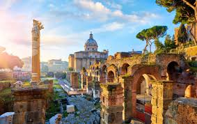
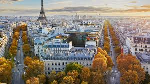
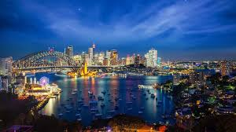
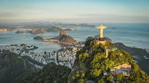

Exploring the Beaches of Bali

Bali's beaches are my sanctuary, where the rhythmic crash of waves and the soft, warm sand beneath my feet create a symphony of serenity. Each morning begins with the promise of a new adventure as I wander along the shores, greeted by the salty breeze and the gentle sway of coconut palms against the backdrop of vibrant parasols.
Padang Padang Beach holds a special place in my heart, tucked away between towering cliffs that guard its pristine beauty like a hidden treasure. Descending the narrow staircase feels like entering a secret paradise, where the turquoise waters meet the powdery white sands in perfect harmony. It's a haven for surfers chasing the perfect wave and sun-seekers lounging under the tropical sun.
Echo Beach beckons with its laid-back charm, where the ebb and flow of the tide set the rhythm of the day. Here, I lose track of time watching surfers carve through the waves while local fishermen skillfully navigate their colorful boats offshore. As the sun begins its descent, the sky transforms into a canvas of fiery hues, casting a spellbinding glow over the horizon.
But beyond the natural beauty, Bali's beaches are imbued with the essence of Balinese culture. The daily offerings, meticulously crafted and placed with reverence, remind me of the island's spiritual heartbeat. The distant melodies of gamelan music drifting from nearby temples add a mystical allure to the air, creating an atmosphere where tranquility and tradition intertwine seamlessly.
Evenings in Bali are a sensory delight, especially at Jimbaran Bay where seafood feasts unfold against a backdrop of flickering torches and the gentle lapping of waves. Dining under the stars, with the scent of grilled fish and spices filling the air, feels like a culinary journey infused with the island's rich flavors and hospitality.
Bali's beaches aren't just destinations; they're gateways to moments of pure bliss and connection with nature. Each visit leaves me with a profound sense of gratitude for this enchanting island that continues to unveil its beauty, culture, and soul with every tide that washes ashore.
A Taste of Italy: Exploring Rome

Arriving in Rome feels like stepping into a living museum where every corner tells a story that's both ancient and vibrant. The cobblestone streets whisper tales of emperors and gladiators, while the scent of freshly brewed espresso drifts from cozy cafes tucked away in centuries-old buildings.
One of my cherished spots is the Trevi Fountain, a masterpiece that never fails to enchant me. Tossing a coin into its sparkling waters feels like a ritual, a promise to return to this city that has stolen my heart. The rush of the fountain's waters seems to echo the pulse of Rome itself, a city that thrives on its rich history and modern vitality.
Exploring the Vatican City is like a journey through faith and art. St. Peter's Basilica leaves me breathless every time I enter, overwhelmed by its sheer size and the timeless beauty of Michelangelo's Pieta. Climbing the dome offers a breathtaking panorama of Rome, a sprawling mosaic of rooftops and ancient ruins that stretch towards the distant hills.
The Colosseum stands as a testament to Rome's grandeur and resilience. Imagining the roar of the crowds and the spectacles that once unfolded within its walls sends shivers down my spine. Nearby, the Roman Forum invites reflection among the ruins of temples and arches, a glimpse into the heart of an empire that shaped the course of history.
But it's not just about monuments and history; Rome is a city that celebrates life with gusto. Piazza Navona transforms into a lively stage as dusk falls, alive with street artists, musicians, and the laughter of diners gathered around its fountains. I find myself lingering over gelato, savoring the flavors of pistachio and stracciatella while soaking in the atmosphere that feels both timeless and dynamic.
Evenings in Rome are a feast for the senses. Dining in Trastevere feels like stepping into a postcard with its narrow alleys and charming trattorias. Here, I indulge in classic Roman dishes like amatriciana or supplì, paired with a glass of velvety red wine that seems to embody the essence of Italy's culinary heritage.
Rome has a way of weaving itself into your soul, leaving an indelible mark that calls you back time and again. Each visit unveils new layers of its beauty and complexity, reminding me why this city remains a timeless muse for artists, writers, and dreamers alike.
Experiencing the Magic of Maldives

Descending by seaplane into the Maldives feels like entering a dreamscape where endless shades of blue meet pristine white sands. The islands, like pearls scattered across the Indian Ocean, offer an unparalleled sense of serenity and luxury that seems almost otherworldly.
My arrival at the overwater bungalow is nothing short of magical. The crystal-clear waters beneath the deck teem with vibrant marine life, visible even before I dive in. Snorkeling reveals a kaleidoscope of colors as coral gardens stretch beneath me, home to graceful manta rays, playful dolphins, and schools of tropical fish that dance through the currents.
Each day begins with the sun painting the sky in hues of orange and pink, a gentle reminder of the tranquility that envelops the Maldives. Mornings are spent exploring the islands by kayak, discovering hidden coves and untouched beaches where I can lose myself in the beauty of nature.
The Maldives offer a unique blend of adventure and relaxation. Diving excursions unveil the wonders of the deep, where shipwrecks and vibrant reefs tell stories of time and tide. Yet, there's also a profound stillness found in moments spent lounging by the infinity pool, sipping on fresh coconut water as the world slows to a perfect pace.
Evenings bring a sense of wonder as bioluminescent plankton light up the shoreline, creating a magical display of nature's brilliance. Dining under the stars, with the gentle sound of waves as my soundtrack, feels like a scene from a fairy tale. Each meal is a celebration of flavors, from freshly caught seafood to tropical fruits that burst with sweetness.
But beyond the natural beauty, it's the warmth and hospitality of the Maldivian people that leave a lasting impression. Their genuine smiles and graciousness make every interaction memorable, adding a layer of richness to the experience that goes beyond the physical beauty of the islands.
The Maldives are not just a destination; they're a journey into a world where time stands still and every moment is infused with the magic of the sea. As I leave this paradise, I carry with me the serene whispers of the waves, a reminder of the profound peace that can be found in the heart of nature's most exquisite creations.
My Journey through Kyoto: Temples, Gardens, and Traditional Tea Houses

Kyoto, renowned as Japan's cultural heart, invited me to immerse myself in its timeless beauty and profound spirituality. I began my journey with a visit to Kinkaku-ji, the famed Golden Pavilion, where shimmering reflections danced upon tranquil waters, offering a glimpse into Japan's rich architectural heritage. Exploring the serene rock garden at Ryoan-ji, I found myself captivated by the meticulously arranged stones that evoked a sense of Zen tranquility. Delving deeper into Kyoto's cultural tapestry, a stroll through Arashiyama's bamboo groves and a serene tea ceremony experience in Uji, the birthplace of matcha, left a lasting impression. Whether wandering through historic Gion or marveling at the crimson hues of Fushimi Inari Shrine's torii gates, Kyoto captivated me with its blend of ancient traditions and natural beauty.
Parisian Chic: My Fashionable Journey through the Heart of France

Paris, the epitome of romance and sophistication, beckoned me with its iconic landmarks, chic boutiques, and world-renowned cuisine. Embarking on a fashionable journey along Avenue Montaigne, where haute couture houses showcased the latest trends, I explored the bohemian charm of Le Marais, home to trendy galleries and concept stores. Indulging in the timeless tradition of Parisian café culture at Café de Flore or Les Deux Magots, where intellectuals once gathered over coffee and croissants, added to my enchantment. Wandering through the enchanting gardens of Luxembourg Palace or embarking on a Seine River cruise past the illuminated Eiffel Tower heightened my appreciation for the city's charm. From the artistic treasures of the Louvre to the vibrant nightlife of Montmartre, Paris exuded an irresistible allure that captivated me at every turn.
Exploring Cape Town: Nature, Culture, and Wine Through My Eyes

Cape Town, nestled between the ocean and Table Mountain's rugged slopes, offered me a captivating blend of natural beauty, diverse culture, and rich history. Ascending Table Mountain via cable car for panoramic views stretching across the city and coastline, I embarked on its hiking trails amidst a tapestry of endemic flora and fauna. Delving into Cape Town's poignant history with a visit to the District Six Museum, which commemorates the forced removals during apartheid, and wandering through the vibrant streets of the Bo-Kaap, renowned for its colorful houses and Cape Malay heritage, left a profound impact. Tasting the region's renowned wines in Stellenbosch and Franschhoek, where sprawling vineyards offered cellar tours and tastings amid breathtaking landscapes, was a highlight. With its lively markets, pristine beaches, and eclectic cuisine, Cape Town captivated me with its blend of natural splendor and cultural vibrancy.
New York City: Icons, Neighborhoods, and Nightlife Through My Lens

New York City, a bustling metropolis brimming with iconic landmarks, cultural diversity, and endless entertainment options, invited me to immerse myself in its vibrant energy. Discovering the city's pulsating heart in Times Square, where billboards illuminated the streets 24/7, and strolling through Central Park's verdant oasis amidst skyscrapers provided a serene escape. Diving into the city's artistic legacy at the Metropolitan Museum of Art and catching a Broadway show in the Theater District left me in awe. Uncovering hidden gems in neighborhoods like Chinatown's speakeasies and rooftop bars boasting panoramic skyline views added depth to my exploration. Whether sampling diverse cuisines in Queens or exploring Brooklyn's historic streets, New York City captivated me with its dynamic blend of culture, creativity, and urban charm.
Sydney: Icons, Beaches, and Beyond Through My Eyes

Sydney, a vibrant fusion of natural beauty and cosmopolitan flair, invited me to explore its iconic landmarks, stunning beaches, and thriving cultural scene. Admiring the architectural marvels of Sydney Harbour, including the sails of the Sydney Opera House and the towering arches of the Sydney Harbour Bridge at sunrise or sunset, was breathtaking. Relaxing on the sun-drenched shores of Bondi Beach, where surfers rode the waves and coastal walks offered panoramic vistas of the Pacific Ocean, was rejuvenating. Venturing beyond the city to the Blue Mountains and exploring mist-shrouded valleys and cascading waterfalls was awe-inspiring. Indulging in a wine-tasting tour through the Hunter Valley's vineyards, renowned for their world-class wines, was a delight. With its lively markets, alfresco dining options, and vibrant festivals, Sydney captivated me with its laid-back charm and infectious energy.
Marrakech: Souks, Palaces, and Riads Through My Journey

Marrakech, a vibrant tapestry of bustling souks, ornate palaces, and ancient medinas, offered me an immersive journey through Morocco's rich cultural heritage. Losing myself in the labyrinthine alleys of the Medina, where artisans crafted intricate ceramics, textiles, and leather goods, and wandering through the bustling souks of Jemaa el-Fnaa, captivated me. Exploring the city's architectural wonders at Bahia Palace and the Saadian Tombs, adorned with exquisite tile work and ornamental carvings, showcased the region's craftsmanship. Experiencing traditional Moroccan hospitality in a riad, where serene courtyards and cooling fountains provided a tranquil retreat from the city's vibrant energy, was memorable. Savoring fragrant tagines in hidden courtyard restaurants and relaxing in a hammam spa added to the sensory allure and timeless charm of Marrakech.
Rio de Janeiro: Carnival, Christ the Redeemer, and Culture Through My Experience

Rio de Janeiro, a city of contrasts where lush mountains meet golden beaches and vibrant neighborhoods pulse with samba rhythms, invited me to embrace its infectious energy and cultural diversity. Joining the revelry of Rio's Carnival, a dazzling spectacle of colorful costumes, samba parades, and street parties that captivated millions each year, was exhilarating. Ascending Corcovado Mountain to visit the iconic Christ the Redeemer statue, which offered panoramic views of the city's sprawling coastline and verdant hillsides, left me in awe. Riding the cable car to Sugarloaf Mountain for breathtaking vistas of Guanabara Bay and the Atlantic Ocean, and exploring the vibrant street art scene in the bohemian neighborhood of Santa Teresa, added depth to my experience. Gaining insight into Rio's communities with a guided tour of its favelas, where residents shared their stories and traditions, showcased the city's resilience and cultural richness. Whether lounging on Copacabana Beach or exploring the historic streets of downtown Rio, the city captivated me with its festive spirit, natural beauty, and warm hospitality.
Bangkok: Street Food, Temples, and Nightlife Through My Eyes
Bangkok, Thailand's bustling capital, dazzled me with its eclectic blend of ancient traditions, vibrant street life, and modern skyscrapers. Diving into the city's culinary scene with visits to bustling markets and street food stalls, where savory pad thai, aromatic tom yum soup, and sweet mango sticky rice tempted my taste buds, was a culinary adventure. Exploring Bangkok's spiritual heritage at the Grand Palace and Wat Arun, where gilded spires and intricate murals reflected the country's rich cultural heritage, provided insights into Thailand's history and traditions. Cruising along the Chao Phraya River to discover floating markets and riverside temples, and escaping the city's hustle and bustle with tranquil boat rides through the khlongs (canals) of Thonburi, offered moments of serenity. Immersing myself in the city's vibrant nightlife scene, from rooftop bars offering panoramic views to hidden speakeasies serving creative cocktails, was a thrilling experience. Whether shopping for designer goods in luxury malls or bargaining for souvenirs in local markets, Bangkok captivated me with its dynamic blend of old-world charm and modern allure.